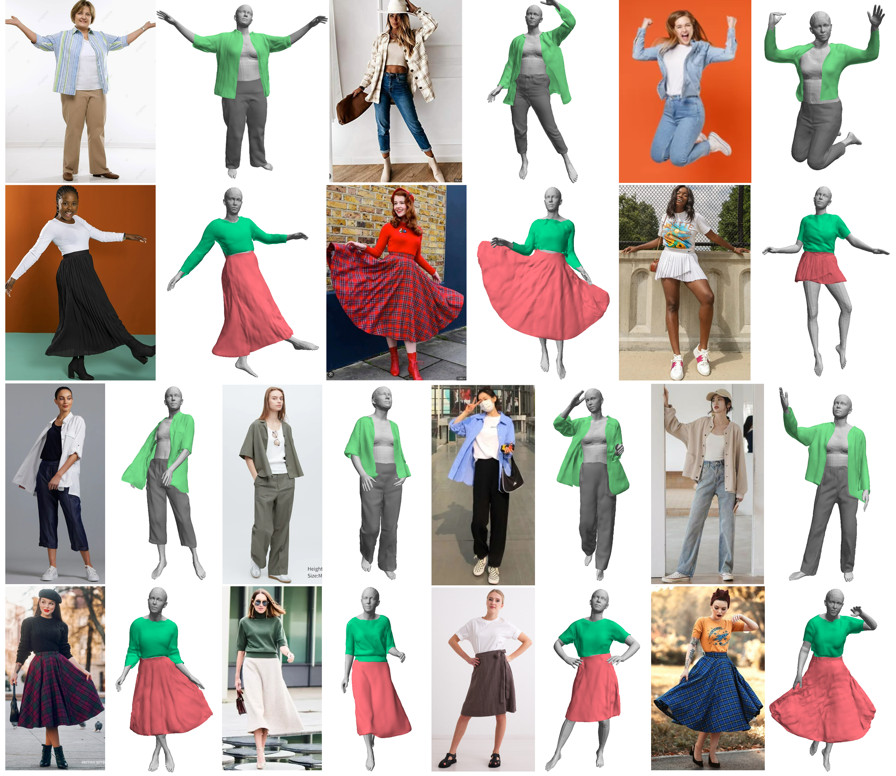
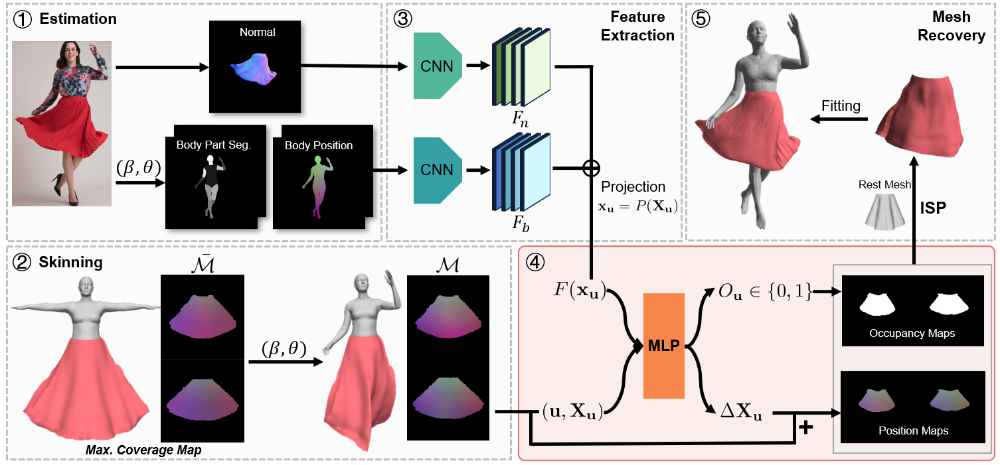

Garment Recovery with Shape and Deformation Priors
Ren Li, Corentin Dumery, Benoit Guillard, Pascal Fua
Abstract
While modeling people wearing tight-fitting clothing has made great strides in recent years, loose-fitting clothing remains a challenge. We propose a method that delivers realistic garment models from real-world images, regardless of garment shape or deformation. To this end, we introduce a fitting approach that utilizes shape and deformation priors learned from synthetic data to accurately capture garment shapes and deformations, including large ones. Not only does our approach recover the garment geometry accurately, it also yields models that can be directly used by downstream applications such as animation and simulation.
We propose a fitting method that leverages shape and deformation priors trained on synthetic data to recover realistic 3D garment mesh from in-the-wild images. We produce triangulated meshes that are directly usable for animation and simulation.
Recovering from in-the-wild images

Our method can produce realistic 3D meshes with fine details across a wide range of garment types, from tight-fitting attire to more relaxed and flowing outfits.
Approach

Given an image of a clothed person, (1) we first estimate the normal map of the target garment and the SMPL body parameters $(\beta,\theta)$, which are used to compute the body part segmentation and position maps. (2) The maximum coverage garment shape $\bar{\mathcal{M}}$ is then skinned to closely fit to the body, yielding $\mathcal{M}$. Leveraging (3) pixel-aligned image features, our deformation model (4) predicts occupancy and position maps to correct M for large deformations. (5) The 3D garment mesh is recovered using ISP and further refined.
BibTeX
If you find our work useful, please cite it as:@inproceedings{li2024garment,
author = {Li, Ren and Dumery, Corentin and Guillard, Benoit and Fua, Pascal},
title = {{Garment Recovery with Shape and Deformation Priors}},
booktitle = {Proceedings of the IEEE/CVF Conference on Computer Vision and Pattern Recognition},
year = {2024}
}
References
[ISP]
R. Li, B. Guillard, P. Fua. ISP: Multi-Layered Garment Draping with Implicit Sewing Patterns. In NeurIPS, 2023.